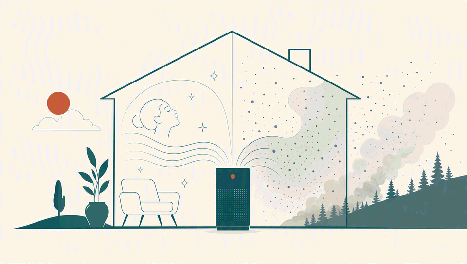
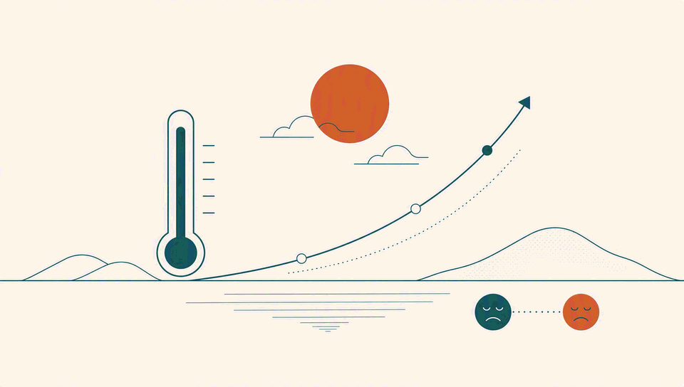
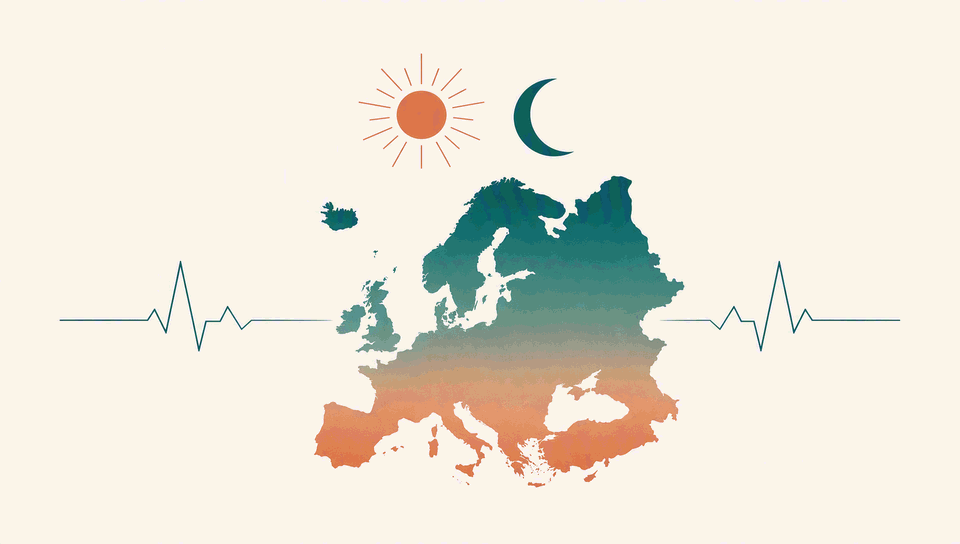
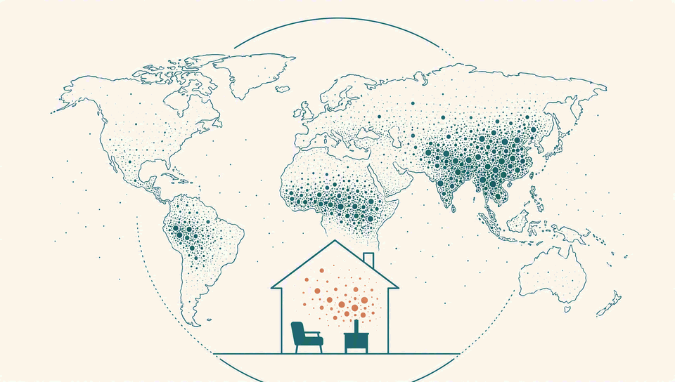

News
Papers, talks and announcements — newest first. Click an item to expand.
Geographic Environmental Change and Human Behavioral Responses
@ Lanzhou · Invited talk
@ Beijing · Attended conference
Cities That Feel: Sensing Human Responses to Environmental Change
@ Guangzhou · Keynote Speaker
Conference site@ Nanchang · Conference organizer
@ Qingdao · Session convener: "GIS Fundamentals and Methods"
@ Nanjing · Session convener: "Human–Computer Interaction and Map Visualization"
Understanding Geographic Environmental Change and Human Behavioral Responses Through Big Data Analytics
@ The Hong Kong Polytechnic University
@ Guangzhou
@ Guangzhou · Session convener: "Remote Sensing and GIS"

Global health benefits and cost-effectiveness of indoor air purification to mitigate PM2.5 from wildfire smoke
Published in Nature Health — quantifies the global health and economic gains of indoor air purification against wildfire PM2.5.
Read the paperWavelength-specific urban nighttime light modulates expressed sentiment across China
Published in Nature Cities — shows how the colour of city night light shapes expressed sentiment.
Read the paperGeographic Environmental Change and Human Behavioral Responses from Big Data Analysis
@ Xiamen · Keynote speech
AI and Complex Earth Systems: Fundamental Theory, Key Technologies, and Scientific Frontiers
@ Beijing
Causal Identification of Geographic Human–Land Systems from Big Data
@ Peking University
@ Wuhan · Attended conference
@ Wuhan · Attended conference
@ Zhuhai · Attended conference

Unequal impacts of rising temperatures on global human sentiment
Published in One Earth — warming erodes expressed well-being, and some populations bear far more of the burden.
Read the paper
Future heat-related mortality in Europe driven by compound day-night heatwaves
Published in Nature Communications — projects European heat mortality under compound day-and-night heatwaves.
Read the paper
Global Disparities in Indoor Wildfire-PM2.5 Exposure and Mitigation Costs
Published in Science Advances — quantifies unequal exposure to indoor wildfire fine particles and the costs of cleaner air.
Read the paper